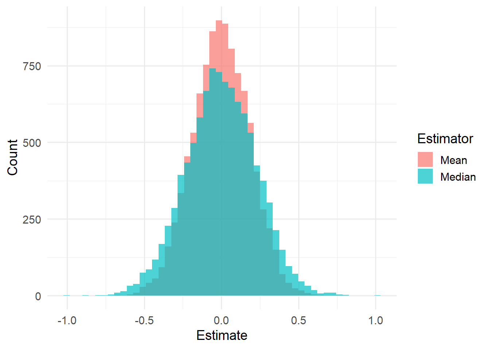
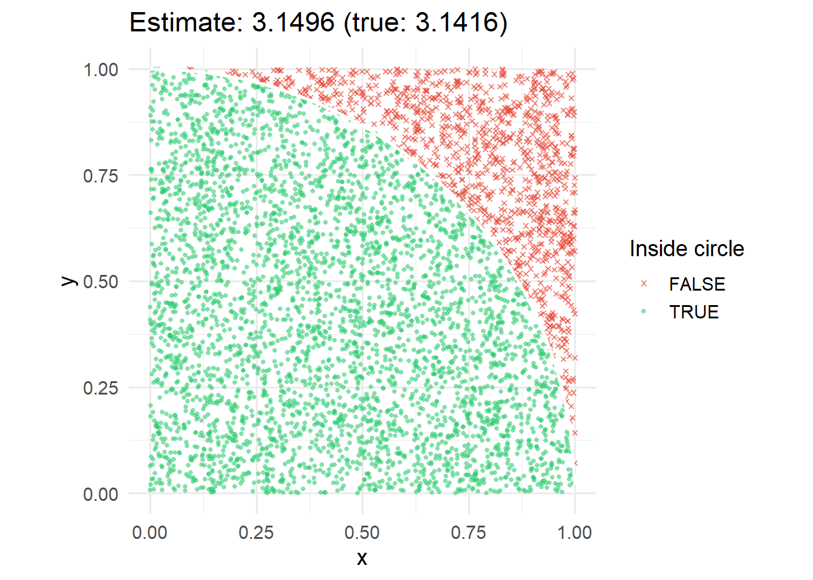
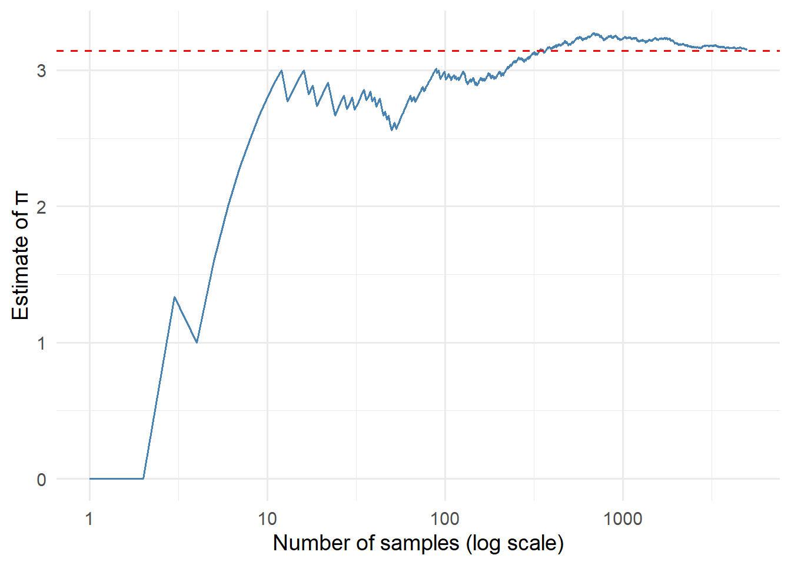
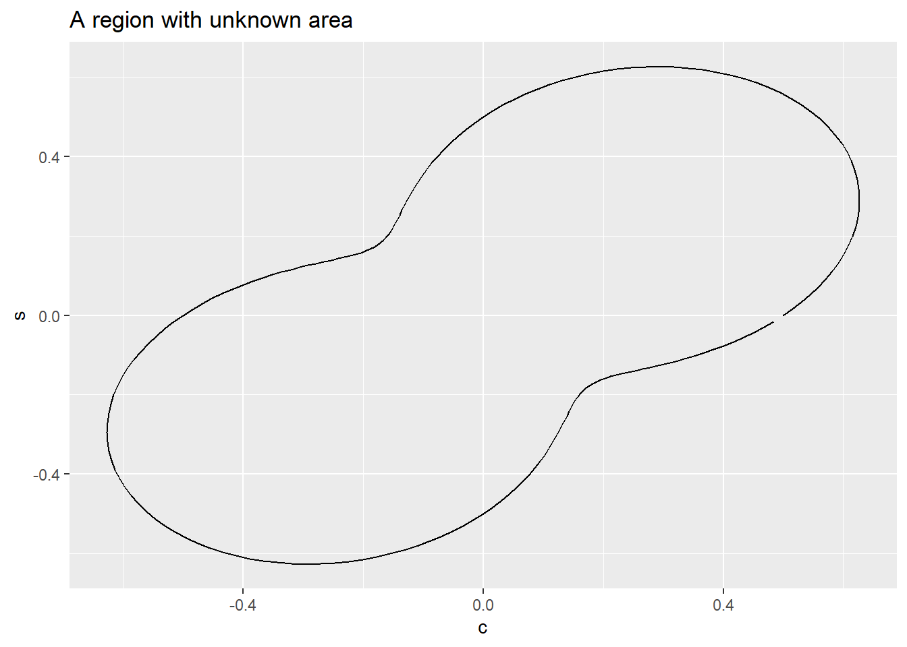
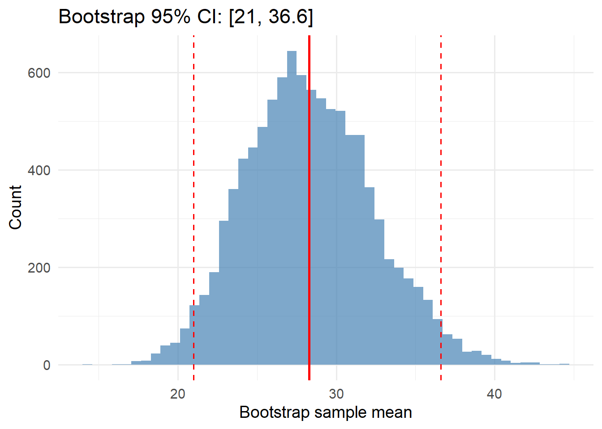
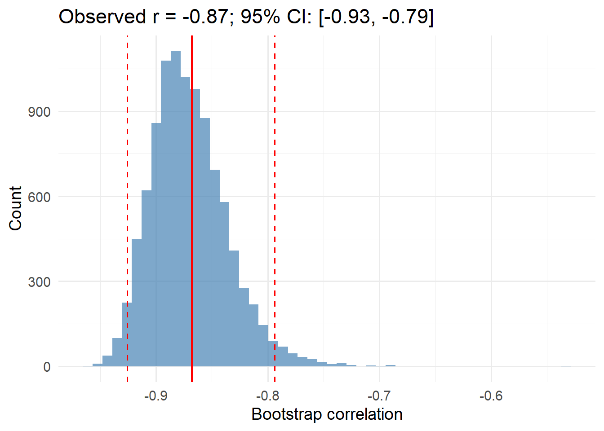

Show the code
library(here)
library(knitr)
library(tidyverse)library(here)
library(knitr)
library(tidyverse)library(eda4mlr)# stabilize simulated data
source(here("code", "eda4ml_set_seed.R"))
source(here("code", "gen_circuit.R"))How might our plans, methods, or model fail?
This is the question that motivates statistical simulation. When we propose a method—an estimator, a model, a decision rule—we want to know how it will behave before we deploy it. Will it work well with small samples? What if the data have outliers? What if our assumptions are wrong?
Simulation lets us explore these scenarios systematically. We generate data from known processes, apply our methods, and observe what happens. Because we control the data-generating process, we can study behavior that would be impossible to observe in practice.
Simulation is firmly in the spirit of exploratory data analysis. We are not proving theorems—we are exploring possibilities. The goal is insight: understanding how methods behave so we can make better choices.
The R stats package provides random number generators for commonly used probability distributions. For each distribution, the package provides four functions following a naming convention illustrated by the normal distribution:
dnorm() density at a given point \(x\)pnorm() cumulative probability, \(P(X \le x)\)qnorm() quantile, return \(x\) having prescribed cumulative probability \(p\)rnorm() generate independent instances \((X_1, \ldots, X_n)\) of a normal random variableThe prefix indicates the function type: d for density, p for probability (CDF), q for quantile, and r for random generation.
rng_tbl <- tibble::tribble(
~fn, ~value, ~distribution,
"rbeta", "dbl", "Beta",
"rcauchy", "dbl", "Cauchy",
"rchisq", "dbl", "(non-central) Chi-Squared",
"rexp", "dbl", "Exponential",
"rf", "dbl", "F",
"rgamma", "dbl", "Gamma",
"rlnorm", "dbl", "Log Normal",
"rlogis", "dbl", "Logistic",
"rnorm", "dbl", "Normal",
"rt", "dbl", "Student t",
"runif", "dbl", "Uniform",
"rweibull", "dbl", "Weibull",
"rbinom", "int", "Binomial",
"rgeom", "int", "Geometric",
"rhyper", "int", "Hypergeometric",
"rnbinom", "int", "Negative Binomial",
"rpois", "int", "Poisson",
)# separate function prefix (type) from remaining name
dpqr_tbl <- rng_tbl |>
dplyr::mutate(
prefix = "[d, p, q, r]",
suffix = stringr::str_remove(fn, "r")
) |>
dplyr::select(
prefix, suffix, value, distribution
)The stats package includes the following continuous distributions (among others; see ?Distributions for a complete list).
dpqr_tbl |>
dplyr::filter(value == "dbl") |>
dplyr::select(- value) |>
knitr::kable(
caption = "Selected Continuous Distributions from `stats`"
)stats
| prefix | suffix | distribution |
|---|---|---|
| [d, p, q, r] | beta | Beta |
| [d, p, q, r] | cauchy | Cauchy |
| [d, p, q, r] | chisq | (non-central) Chi-Squared |
| [d, p, q, r] | exp | Exponential |
| [d, p, q, r] | f | F |
| [d, p, q, r] | gamma | Gamma |
| [d, p, q, r] | lnorm | Log Normal |
| [d, p, q, r] | logis | Logistic |
| [d, p, q, r] | norm | Normal |
| [d, p, q, r] | t | Student t |
| [d, p, q, r] | unif | Uniform |
| [d, p, q, r] | weibull | Weibull |
These distributions have interesting histories and relationships.1 For example a beta variable \(X\) having shape parameters \((\alpha, \beta)\) can be expressed as the ratio \(U/(U + V)\), where \((U, V)\) are independent gamma variables having a common scale parameter, and respective shape parameters \((\alpha, \beta)\).
The stats package also includes the following discrete distributions.
dpqr_tbl |>
dplyr::filter(value == "int") |>
dplyr::select(- value) |>
knitr::kable(
caption = "Selected Discrete Distributions from `stats`"
)stats
| prefix | suffix | distribution |
|---|---|---|
| [d, p, q, r] | binom | Binomial |
| [d, p, q, r] | geom | Geometric |
| [d, p, q, r] | hyper | Hypergeometric |
| [d, p, q, r] | nbinom | Negative Binomial |
| [d, p, q, r] | pois | Poisson |
The Poisson distribution can be described as the limiting case of binomial distributions, \(\text{Binom}(n, p_n)\) such that the respective expected values, \(n \times p_n\), converge to \(\lambda > 0\) as \(n \rightarrow \infty\). Equivalently we can write \(p_n \approx \lambda/n\), so that \(p_n\), the probability of success on a single Bernoulli trial, becomes vanishingly small as the number \(n\) of Bernoulli trials increases. For this reason the Poisson distribution has been called “the law of rare events”.
The following code demonstrates random number generation:
# 100 standard normal values
x <- rnorm(n = 100, mean = 0, sd = 1)
# 100 uniform values on [0, 1]
u <- runif(n = 100, min = 0, max = 1)
# 100 Poisson values with mean 5
counts <- rpois(n = 100, lambda = 5)The key insight is that we specify the distribution and its parameters; R generates samples from that distribution.
Statistical simulation is commonly used to evaluate proposed statistical methods. Here’s an example where we can verify simulation results against known theory.
Let \(\hat{m}\) and \(\hat{\mu}\) denote the median and mean, respectively, of a random sample from a continuous distribution. For a symmetric distribution (with a defined population mean value), the population median and mean coincide. But the sample mean is highly sensitive to a few outlying values in the sample, and is thus less robust than the sample median for long-tailed distributions.
Consequently, in financial applications and other applications where long-tailed distributions occur, the median is the preferred descriptor of the central value of the sample and of the population.
In some cases the robustness of the sample median comes at a cost. If the population distribution is normal with mean \(\mu\) and variance \(\sigma^2\) then the sample mean has smaller variance than the sample median (although they estimate the same population value).
\[ \begin{align} \text{Var} \left\{ \hat{\mu} \right\} &= \frac{\sigma^2}{n} \\ \\ \text{Var} \left\{ \hat{m} \right\} &= \frac{\pi}{2} \frac{\sigma^2}{n + 1} \\ \\ \frac{ \text{Var} \left\{ \hat{m} \right\} }{ \text{Var} \left\{ \hat{\mu} \right\} } &\approx \frac{\pi}{2} \\ &\approx 1.57 \end{align} \qquad(4.1)\]
This ratio of variances in the normal case can be verified by simulation.
The structure of a simulation study follows a common pattern:
# Parameters
n <- 30 # sample size
R <- 10000 # number of replications
# Storage
means <- numeric(R)
medians <- numeric(R)
# Simulation loop
for (r in 1:R) {
x <- rnorm(n) # generate sample
means[r] <- mean(x) # compute mean
medians[r] <- median(x) # compute median
}
# Compare variances
var(medians) / var(means)n <- 30
R <- 10000
set.seed(42)
sim_results <- tibble::tibble(
rep = 1:R
) |>
dplyr::mutate(
sample = purrr::map(rep, ~ rnorm(n)),
mean_val = purrr::map_dbl(sample, mean),
median_val = purrr::map_dbl(sample, median)
)
var_ratio <- var(sim_results$median_val) / var(sim_results$mean_val)sim_results |>
tidyr::pivot_longer(
cols = c(mean_val, median_val),
names_to = "estimator",
values_to = "value"
) |>
dplyr::mutate(
estimator = dplyr::case_when(
estimator == "mean_val" ~ "Mean",
estimator == "median_val" ~ "Median"
)
) |>
ggplot2::ggplot(ggplot2::aes(x = value, fill = estimator)) +
ggplot2::geom_histogram(bins = 50, alpha = 0.7, position = "identity") +
ggplot2::labs(
x = "Estimate",
y = "Count",
fill = "Estimator"
) +
ggplot2::theme_minimal(base_size = 14)
tibble::tibble(
Estimator = c("Mean", "Median"),
Variance = c(var(sim_results$mean_val), var(sim_results$median_val)),
`Std Dev` = c(sd(sim_results$mean_val), sd(sim_results$median_val))
) |>
knitr::kable(digits = 4)| Estimator | Variance | Std Dev |
|---|---|---|
| Mean | 0.0338 | 0.1837 |
| Median | 0.0512 | 0.2263 |
The simulated variance ratio is 1.517, compared to the theoretical value of \(\pi/2 \approx\) 1.571. Simulation confirms the theoretical result.
In this example, simulation merely illustrates a property already determined mathematically. But in other situations, statistical simulation may be the best practical way to understand the properties of a proposed statistical procedure, or more generally, a system that entails random events.
This example illustrates a recurring theme: understanding the properties of statistical procedures—here, variance and robustness under different distributional assumptions—is what allows us to choose wisely among them. The simulation confirms what mathematics predicts, but both the mathematics and the simulation serve the same end: grounding practical choices in principled understanding.
Monte Carlo simulation encompasses a broad set of algorithms that use random sampling to obtain numerical values. Mathematician Stanislav Ulam led the development of this approach (and coined the name) as part of the Manhattan Project during World War II. The approach is used when other types of numerical calculation are not feasible.
Here is a classic illustration. Recall that a circle of radius \(r\) has an area equal to \(\pi \; r^2\). Setting \(r = 1\) we see that the unit circle has an area equal to \(\pi\). Centered at the origin of the plane, the area is divided equally among the four quadrants of the plane. Thus the area within the first quadrant equals \(\pi/4\). We can use random sampling to estimate \(\pi\) as follows.
set.seed(42)
n_points <- 5000
pi_data <- tibble::tibble(
x = runif(n_points),
y = runif(n_points),
inside = (x^2 + y^2) < 1
)
pi_estimate <- 4 * mean(pi_data$inside)pi_data |>
ggplot2::ggplot(ggplot2::aes(x = x, y = y, color = inside, shape = inside)) +
ggplot2::geom_point(alpha = 0.6, size = 1.0) +
ggplot2::stat_function(fun = ~ sqrt(1 - .x^2), color = "white", linewidth = 1) +
ggplot2::coord_fixed() +
ggplot2::scale_color_manual(values = c("FALSE" = "#E74C3C", "TRUE" = "#2ECC71")) +
ggplot2::scale_shape_manual(values = c("FALSE" = 4, "TRUE" = 16)) +
ggplot2::labs(
title = paste0("Estimate: ", round(pi_estimate, 4), " (true: ", round(pi, 4), ")"),
color = "Inside circle",
shape = "Inside circle"
) +
ggplot2::theme_minimal(base_size = 14)
The precision of the estimate improves as the number \(n\) of randomly generated points increases.
More generally, to estimate \(\theta = E[g(X)]\) for some function \(g\) and random variable \(X\) we define the sample estimate \(\hat{\theta}\):
\[\hat{\theta} = \frac{1}{n}\sum_{i=1}^n g(X_i)\]
where \(X_1, \ldots, X_n\) are random samples from the distribution of \(X\).
By the Law of Large Numbers, \(\hat{\theta} \to E[g(X)]\) as \(n \to \infty\). The standard error of the estimate decreases as \(1/\sqrt{n}\).
cumulative_pi <- tibble::tibble(
n = 1:n_points,
cumsum_inside = cumsum(pi_data$inside),
estimate = 4 * cumsum_inside / n
)
cumulative_pi |>
ggplot2::ggplot(ggplot2::aes(x = n, y = estimate)) +
ggplot2::geom_line(color = "steelblue") +
ggplot2::geom_hline(yintercept = pi, linetype = "dashed", color = "red") +
ggplot2::scale_x_log10() +
ggplot2::labs(
x = "Number of samples (log scale)",
y = "Estimate of π"
) +
ggplot2::theme_minimal(base_size = 14)
The figure below shows a simple closed curve within the unit square centered at the origin.
c_tbl <- gen_circuit_tbl()g_c_tbl <- c_tbl |>
ggplot2::ggplot(mapping = ggplot2::aes(x = c, y = s)) +
ggplot2::geom_path() +
ggplot2::labs(title = "A region with unknown area")
g_c_tbl
The closed curve defines an interior region \(\mathcal{R}\) bounded by the square \(\mathcal{S} = [-0.5, 0.5] \times [-0.5, 0.5]\). We assume that for any point \((x, y) \in \mathcal{S}\) we can determine whether the point is inside or outside \(\mathcal{R}\). The Monte Carlo estimate of the area of this region is the proportion of points randomly selected from \(\mathcal{S}\) that fall within \(\mathcal{R}\) multiplied by the area of \(\mathcal{S}\) (which is 1 in this case).
This is a common application of Monte Carlo simulation: estimating the volume of a given region \(\mathcal{R}\) in Euclidean space, under the assumption that, for any given point, we can determine whether the point is inside or outside the region.
The Monte Carlo approach described above is also called rejection sampling. It works well when the quantity of interest corresponds to a commonly occurring simulation event. But what if we want to estimate rare events?
Suppose \(Z\) has a standard normal distribution, and we want to estimate \(P(Z > 6)\).
# True probability
pnorm(6, lower.tail = FALSE)[1] 9.865876e-10This probability is about 1 in a billion. A naive simulation approach would generate standard normal values and count how many exceed 6:
set.seed(42)
# Generate 1 million standard normals
z <- rnorm(1e6)
# Count how many exceed 6
sum(z > 6)[1] 0We would need billions of samples to see even one event. This is computationally infeasible.
Key idea: Sample from a different distribution where the event of interest is common, then reweight the samples.
Instead of sampling from \(p(x)\), sample from \(q(x)\) where the event \(\{X > 6\}\) is likely. The expected value under \(p\) can be expressed as a weighted expectation under \(q\):
\[E_p[g(X)] = E_q\left[g(X) \cdot \frac{p(X)}{q(X)}\right]\]
The ratio \(w(x) = p(x)/q(x)\) is the importance weight.
Strategy: Shift the normal distribution to center it near 6. Let \(q(x)\) be a normal distribution centered at 6.
set.seed(42)
# Sample from shifted normal (centered at 6)
n <- 10000
x <- rnorm(n, mean = 6, sd = 1)
# Importance weights: p(x) / q(x)
# Using log scale for numerical stability
log_weights <- dnorm(x, log = TRUE) - dnorm(x, mean = 6, log = TRUE)
weights <- exp(log_weights)
# Estimate P(Z > 6)
estimate <- mean((x > 6) * weights)
estimate[1] 9.790833e-10tibble::tibble(
Method = c("True value", "Importance sampling", "Naive (n = 10^6)"),
Estimate = c(
format(pnorm(6, lower.tail = FALSE), scientific = TRUE, digits = 3),
format(estimate, scientific = TRUE, digits = 3),
"0"
)
) |> knitr::kable()| Method | Estimate |
|---|---|
| True value | 9.87e-10 |
| Importance sampling | 9.79e-10 |
| Naive (n = 10^6) | 0 |
Importance sampling makes the estimation of rare event probabilities feasible. The approach generalizes to many problems where direct simulation is inefficient.2
A common question in data analysis is: how precise is our estimate? Classical statistics derives standard error formulas for specific estimators under specific assumptions. But what if we’re using a novel estimator, or our assumptions are uncertain?
The bootstrap provides a general-purpose approach to quantifying uncertainty.
# Original sample
x <- c(12, 15, 18, 22, 25, 28, 31, 35, 42, 55)
# Bootstrap parameters
B <- 10000 # number of bootstrap samples
# Storage for bootstrap estimates
boot_means <- numeric(B)
# Bootstrap loop
for (b in 1:B) {
# Sample with replacement
x_star <- sample(x, replace = TRUE)
# Compute statistic
boot_means[b] <- mean(x_star)
}
# 95% confidence interval (percentile method)
quantile(boot_means, c(0.025, 0.975))set.seed(42)
x <- c(12, 15, 18, 22, 25, 28, 31, 35, 42, 55)
B <- 10000
boot_means <- purrr::map_dbl(1:B, ~ mean(sample(x, replace = TRUE)))
boot_ci <- quantile(boot_means, c(0.025, 0.975))
# Normal theory CI for comparison
n_x <- length(x)
se_x <- sd(x) / sqrt(n_x)
normal_ci <- mean(x) + c(-1, 1) * qt(0.975, df = n_x - 1) * se_xtibble::tibble(mean = boot_means) |>
ggplot2::ggplot(ggplot2::aes(x = mean)) +
ggplot2::geom_histogram(bins = 50, fill = "steelblue", alpha = 0.7) +
ggplot2::geom_vline(xintercept = mean(x), color = "red", linewidth = 1) +
ggplot2::geom_vline(xintercept = boot_ci, color = "red", linetype = "dashed") +
ggplot2::labs(
x = "Bootstrap sample mean",
y = "Count",
title = paste0("Bootstrap 95% CI: [", round(boot_ci[1], 1), ", ", round(boot_ci[2], 1), "]")
) +
ggplot2::theme_minimal(base_size = 14)
For comparison, the normal theory 95% CI is [18.9, 37.7]—similar to the bootstrap result.
The bootstrap works for many statistics: 3
This makes it invaluable for exploratory analysis, where we often compute statistics for which standard error formulas are unavailable or unreliable.
The bootstrap answers a fundamental EDA question: “How much would this pattern change with different data?”
When you observe an interesting pattern—a correlation, a difference between groups, a trend—the bootstrap helps you assess whether that pattern is robust or potentially spurious.
set.seed(42)
# Bootstrap correlation between mpg and weight in mtcars
boot_cor <- purrr::map_dbl(1:B, ~ {
idx <- sample(nrow(mtcars), replace = TRUE)
cor(mtcars$mpg[idx], mtcars$wt[idx])
})
cor_ci <- quantile(boot_cor, c(0.025, 0.975))
cor_observed <- cor(mtcars$mpg, mtcars$wt)tibble::tibble(correlation = boot_cor) |>
ggplot2::ggplot(ggplot2::aes(x = correlation)) +
ggplot2::geom_histogram(bins = 50, fill = "steelblue", alpha = 0.7) +
ggplot2::geom_vline(xintercept = cor_observed, color = "red", linewidth = 1) +
ggplot2::geom_vline(xintercept = cor_ci, color = "red", linetype = "dashed") +
ggplot2::labs(
x = "Bootstrap correlation",
y = "Count",
title = paste0("Observed r = ", round(cor_observed, 2),
"; 95% CI: [", round(cor_ci[1], 2), ", ", round(cor_ci[2], 2), "]")
) +
ggplot2::theme_minimal(base_size = 14)
The observed correlation between fuel efficiency and weight is -0.87, with a 95% bootstrap CI of [-0.93, -0.79]. The entire interval is negative, suggesting the negative association is robust.
For some problems, neither direct simulation nor importance sampling is feasible. Markov Chain Monte Carlo (MCMC) methods address this by constructing a sequence of random values that converges to the desired distribution.
MCMC is fundamental to Bayesian statistics and probabilistic machine learning, where we often need to sample from complex posterior distributions that cannot be sampled directly.
The key ideas are:
The Metropolis-Hastings algorithm is the foundational MCMC method. Given a proposal distribution, it accepts or rejects candidate values based on an acceptance ratio that ensures the chain converges to the desired distribution.
A detailed treatment of MCMC, including the Metropolis algorithm and diagnostics for assessing convergence, is provided in Chapter 16. This material is essential for students pursuing Bayesian machine learning but requires additional mathematical background in Markov chain theory.
Simulation methods connect to machine learning in several ways:
Cross-validation repeatedly resamples data to estimate generalization error—a form of simulation-based model evaluation.
Stochastic gradient descent uses random sampling of training batches, introducing controlled randomness to enable optimization at scale.
Bayesian machine learning relies on MCMC and related methods (variational inference) to sample from posterior distributions over model parameters.
Posterior predictive checks use simulation to assess model fit: generate data from the fitted model and compare to observed data. Discrepancies reveal model failures.
(Variance Ratio Simulation) Verify the variance ratio result using your own simulation. Set parameters: choose sample size \(n\) (e.g., 30) and number of replications \(R\) (e.g., 5000). Initialize vectors to hold \(R\) means and \(R\) medians. For each replication, generate a sample of size \(n\) from rnorm(), compute and store the sample mean and median. Then calculate var(medians) / var(means) and compare to \(\pi/2 \approx 1.57\).
(Cauchy Distribution) As in the previous exercise, generate \(R\) samples, each of size \(n\), but this time use the Cauchy distribution (rcauchy()) rather than normal distribution (rnorm()). Calculate the sample variance and construct a histogram of the \(R\) sample means. What do you observe?
(Bootstrap Confidence Interval) Use the bootstrap to estimate a 95% confidence interval for the median of mtcars$mpg. How does the width compare to a bootstrap CI for the mean?
(Importance Sampling) Estimate \(P(Z > 4)\) using importance sampling with a shifted normal distribution centered at 4. Compare your estimate to pnorm(4, lower.tail = FALSE).
(Inverse Transform) Suppose \((U_1, \ldots, U_n)\) are independent and identically distributed random variables following the standard uniform distribution on the interval \((0, 1)\). Now set \(X_j = - \log_e(U_j)\) for \(j = 1, \ldots, n\). What is the distribution of \((X_1, \ldots, X_n)\)? Verify by simulation.
Statistical Distributions by Forbes, Evans, Hastings, and Peacock
Distributions in Statistics by Johnson and Kotz
Advanced Statistical Computing by Roger Peng